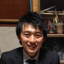

自己紹介
・岡本秀明（おっかー）
ラーメンをこよなく愛し、都内を中心に食べ歩いてます。
ラーメン好きになったきっかけは高校の近くにある武蔵家です。
サイトで紹介しているラーメンの写真は全て自分で撮影しました。
究極の一杯を探し求めることが夢です。
・音賀優颯（わさび）

高校まではサッカーをやってましたが、現在では太陽の下にいることが苦痛でなりません。
冷房がないと生きていけません。とにかく暑いのが苦手です。
ラーメンは好きですが、あんまり食べません。細麺が好きです。あっさり系が好きです。
家系？時々食べますね。去年の冬に次郎へ行ったので、あと半年は食べなくても大丈夫。
カップ麺食べちゃう？
ヒガコでラーメン食べちゃう？